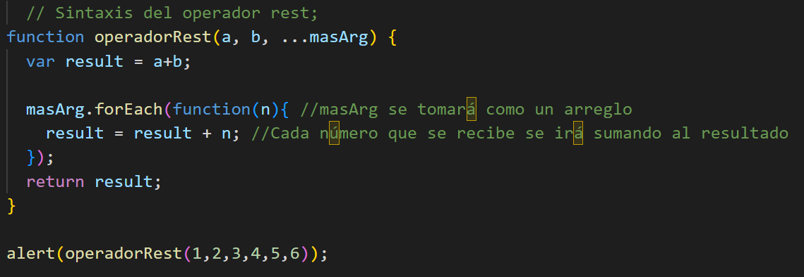

El spread operator también concido como "operador spread" , "sintaxis extendida" o simplemente "operador de propagación" es un operador de JavaScript introducido ECMAScript 2016, este operador nos puede ayudar a crear un código más consistente. Pero antes se debe conocer su definición. Según la Mozilla Developer Network (MDN), se define como una sintaxis extendida, que permite a cualquier elemento iterarble, pueden ser arrays o cadenas, ser expandido donde cero o más argumentos o elementos son esperados, o a un objeto ser expandido en lugares donde cero o más pares de valores clave son esperados. El operador spread se representa con "...".
Es muy importante no confundir el operador spread con el operador rest, ya que el operador rest solamente permite representar un número indefinido de argumentos, por ejemplo un array. La sintaxis del operador rest se define de la siguiente manera:
Al colocar los "..." antes del tercer parámetro, indicamos que en se pueden recibir un número indefinido de parámetros que se deben tratar como un arreglo. Al ejecutar esta función la operación nos devuleve 21, es decir que siempre sumará números sin importar la cantidad de parámetros, esta es la utilidad del operador rest.
Una vez concido en que consiste el operador rest, es momento de hablar sobre la sintaxis del operador spread, dicha sintaxis se puede definir de las siguientes maneras:
Ahora para comprender de mejor manera el operador spread, se muestra un ejemplo, el cual consiste en ingresar una cantidad de datos indeterminadas en las dos casillas, a modo de concatenar estos dos arreglos recibidos.
Para el siguiente ejemplo, debe ingresar un dato en el primer input, puede ser texto o numero, incluso un valor vacío. Una vez ingresado un dato en el primer input, ingresar un dato en el segundo input, y así se puede ir alternando las veces que sean, JavaScript mostrará un arreglo, el cual gracias al operador spread es posible concatenarlo de manera más sencilla y simple.
Su arreglo concatenado:
El código utilizado fue este:
Para la creación de este ejemplo fueron necesarias dos funciones y claramente dos arreglos, por cada input, a su vez iteradores para que cada vez que un botón se presionara vaya aumentando su índice. Cuando el usuario hace click sobre un botón de "ingresar dato" inmediatamente el programa procede a guardarlo en un array, dependiendo del botón puede ser la variable "array1" o "array", luego se imprime en pantalla ambos arrays, que con el operador spread es decir "..." se pueden fácilmente concatenar los dos arreglos.